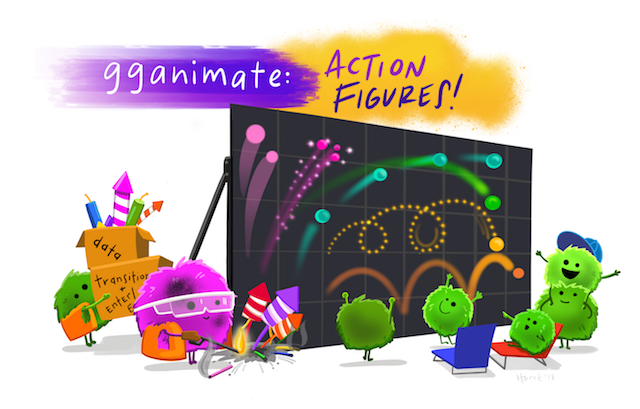
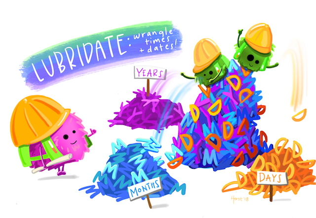
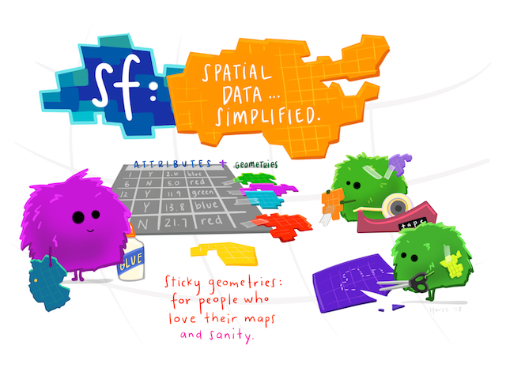
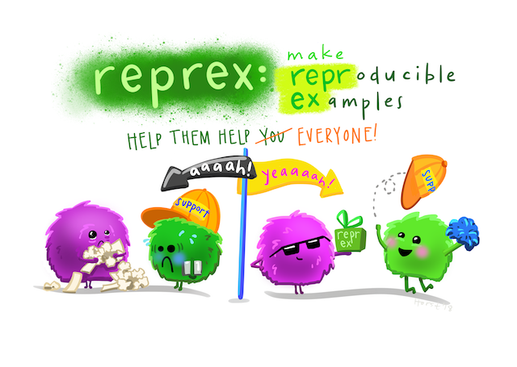

Personifying code
Anything and everything we do to increase visibility of open practices and data science within environmental science communities is important. When we see things, it is easier to value them.
Openscapes Champion Allison Horst is doing this in part through her personifyr art series. She uses her art in the classroom at the University of California at Santa Barbara, where she is a lecturer of data science and statistics in an environmentally-focused graduate program, the Bren School of Environmental Science & Management. She also shares the series online, to the delight of the #rstats Twitter community (for example, see here, and check out the comments!). Through the personifyr series, Allison personifies different operations done in the programming language R. What is so powerful is that you do not have to be an expert in R or know these packages to get a sense of what they do, in a lighthearted and quite joyful way. For example,
ggplot2 creates beautiful visualizations to explore data…
…and as final publication-worthy products

gganimate lets you animate those graphics

lubridate helps you work with dates and times

sf simplifies working with spatial data

reprex makes asking for help more helpful

here makes working with filepaths a dream
![A cartoon showing two paths side-by-side. On the left is a scary spooky forest, with spiderwebs and gnarled trees, with file paths written on the branches like '~/mmm/nope.csv' and 'setwd('/haha/good/luck/')', with a scared looking cute fuzzy monster running out of it. On the right is a bright, colorful path with flowers, rainbow and sunshine, with signs saying 'here!' and 'it’s all right here!' A monster facing away from us in a backpack and walking stick is looking toward the right path. Stylized text reads 'here: find your path.'](../../img/blog/personify-code/here.png)
RMarkdown combines text and code into beautiful reports like magic
![Two fuzzy round monsters dressed as wizards, working together to brew different things together from a pantry (code, text, figures, etc.) in a cauldron labeled 'R Markdown'. The monster wizard at the cauldron is reading a recipe that includes steps '1. Add text. 2. Add code. 3. Knit. 4. (magic) 5. Celebrate perceived wizardry.' The R Markdown potion then travels through a tube, and is converted to markdown by a monster on a broom with a magic wand, and eventually converted to an output by pandoc. Stylized text (in a font similar to Harry Potter) reads 'R Markdown. Text. Code. Output. Get it together, people.'](../../img/blog/personify-code/rmarkdown_wizards.png)
R is an open source language with increasing functionality available at lower start up costs for new users. This is because of recently established norms and best practices developed by the diverse and inclusive online R community.

Allison’s art represents these R operations and the spirit of the online community, who have appreciated her and asked for permission to use in their own classrooms. She enthusiastically encourages this, sharing all her stats art online along with the statement:
“All of this artwork is 100% available (and encouraged!) for open use by CC-BY license. That means: Hooray! I’m so happy that you want to share this artwork - especially if it helps when teaching R/rstats/stats.”
I am so impressed by the personifyr series in so many ways. Not only by Allison’s artistic talent, which is broad and deep, spanning styles and media (fine art and digital) in ways I appreciate but do not have the vocabulary to describe. But I am also so impressed by her ability to break down and communicate complex topics, and her creativity in representing it all in such an engaging and colorful way. To imagine these programming operations as personalities, and to bring to life what they would be doing is such an incredible skill, full stop. And then additionally to have the artistic ability to match is such a gift to us all. What a powerful way to engage the community of R users and data scientists, and welcome the others, including environmental scientists, to see and value these practices as well.
Enjoy Allison’s full personifyr series — and more — here.